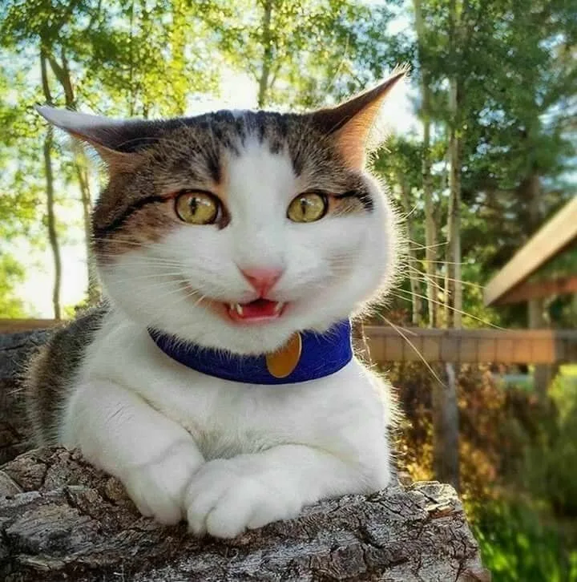
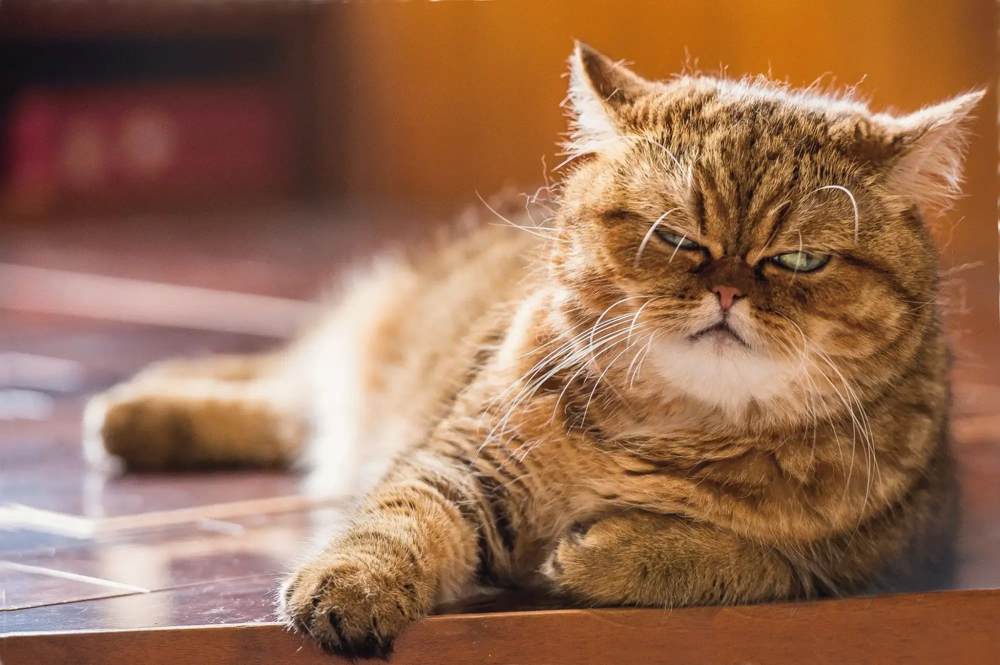

Мое имя Данил. Дюблю кушать много и вкусно!
Мои любимые предметы:
- ИП
- ИПППП в АПК
- 1С предмет
Мои любимые фильмы, книги, видео за август:
- Зеленая миля (1999) ( КиноПоиск )
- Вождение автомобиля | Певзнер Соломон Романович ( Ozon )
- Трое из Простоквашино ( RuTube )
Мои Эго
Счастье: 
Грусть: 